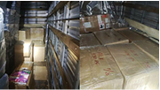
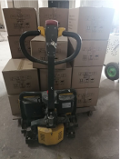
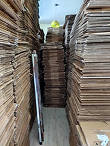
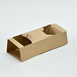

Da origem ao destino, tudo se conecta!
A nova economia não é linear. É circular. É inteligente.Histórico de processos
Acompanhe o histórico da economia circular.
Coletado
01/01/2025
14:48
Processado
20/01/2025
10:30
Reciclado
10/02/2025
18:00
Completo
21/02/2025
11:30
Parceiro Circularis registrou um
processo
Coleta nas instalações da Brose foi finalizada. O lote foi identificado via escaneamento e seu registro já consta
no sistema.

Parceiro Circularis registrou um
processo
O lote foi separado na triagem inicial e está sendo encaminhado para a etapa
seguinte
da cadeia de reaproveitamento.

Parceiro Circularis registrou um
processo
O lote passou pelo processamento e está disponível para a fase de
reciclagem.

Parceiro Circularis registrou um
processo
Após a reciclagem, o lote ganhou uma nova vida como porta-copos.

Parceiro Circularis registrou um
processo
Os porta-copos resultantes da reciclagem foram devidamente encaminhados para
reimplantação na Brose.